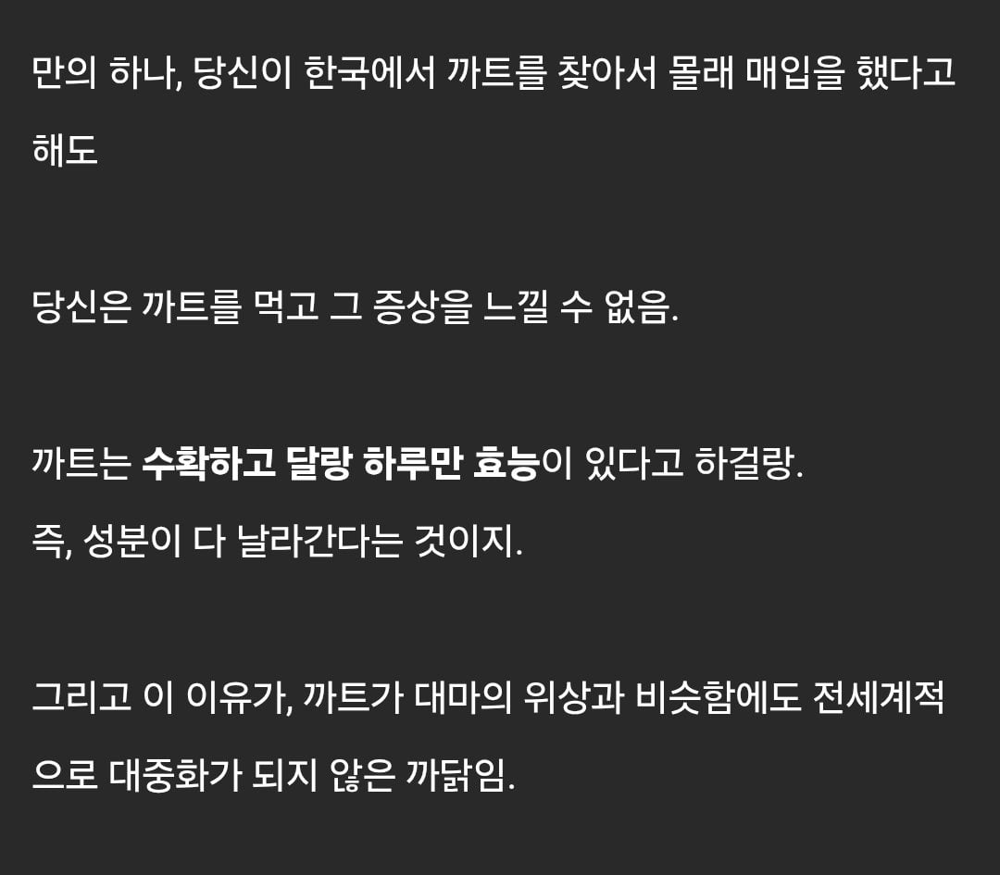
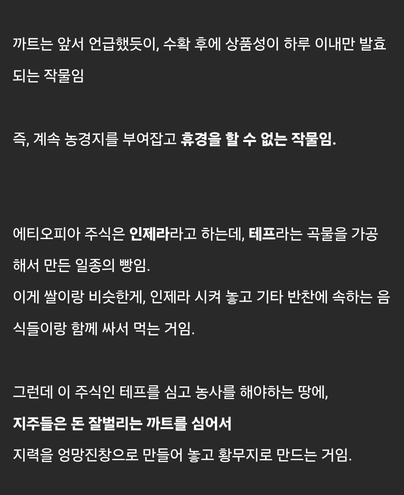
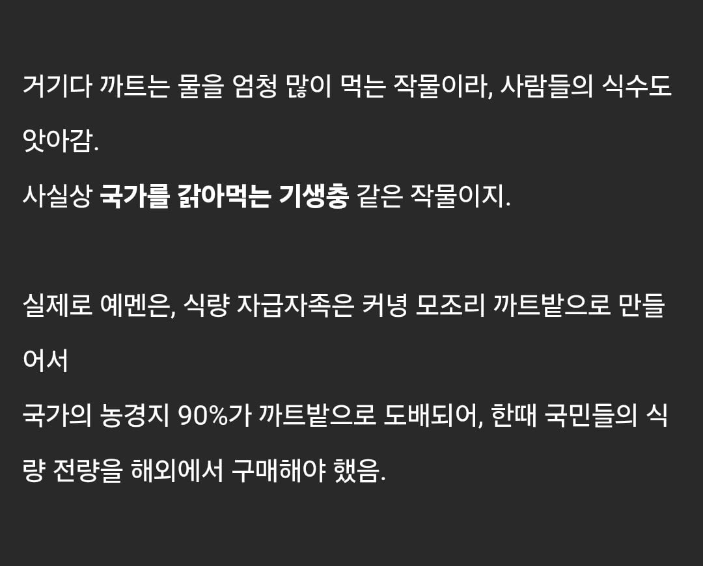
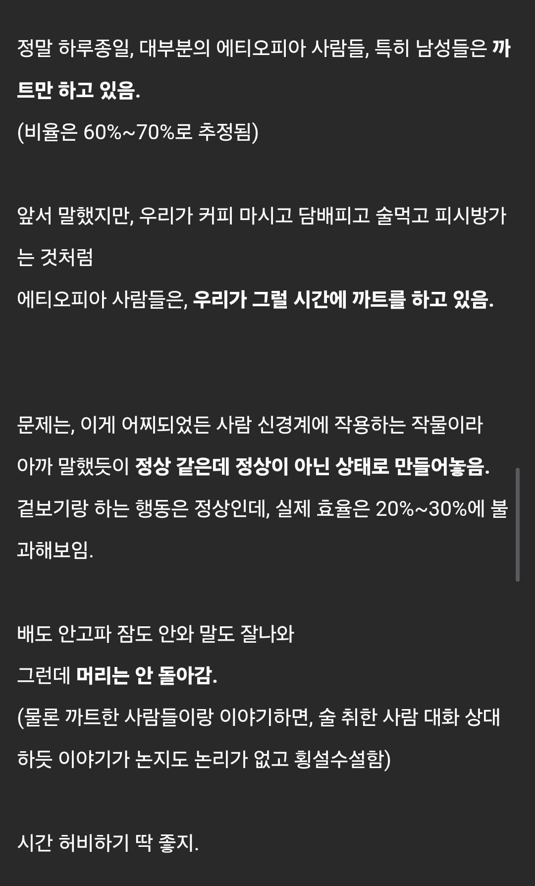
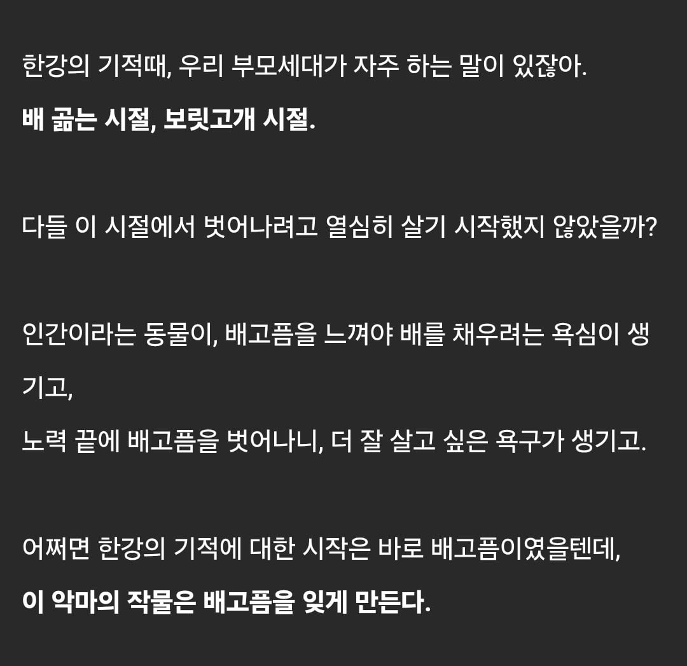
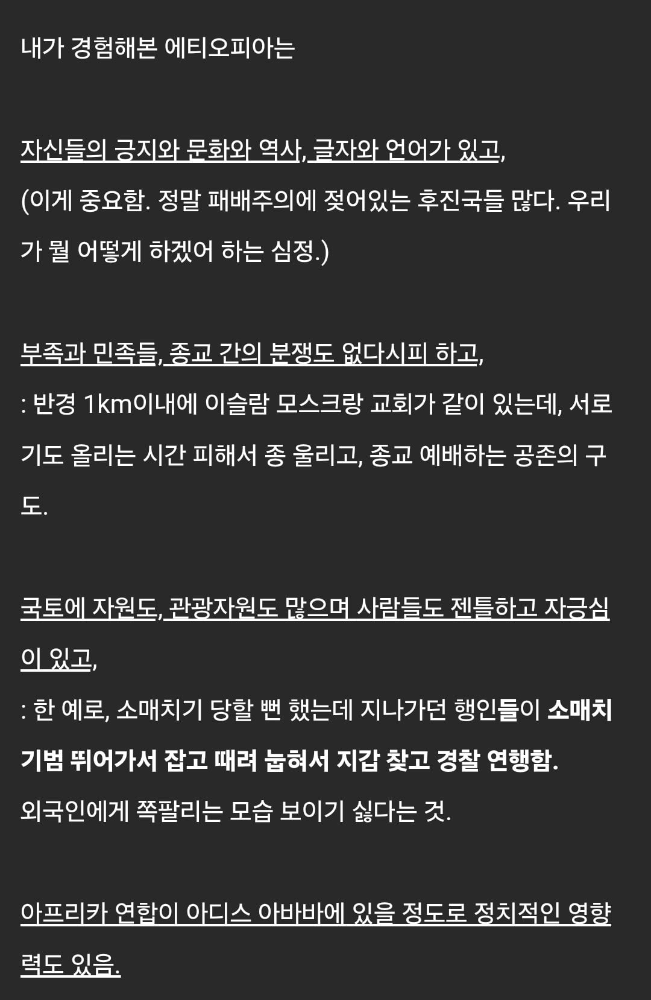
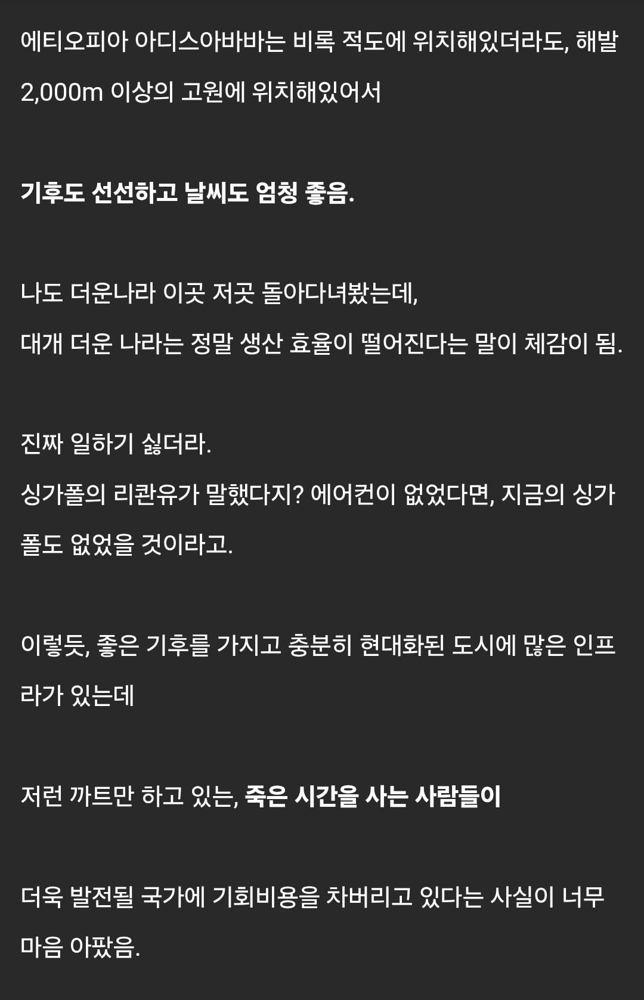
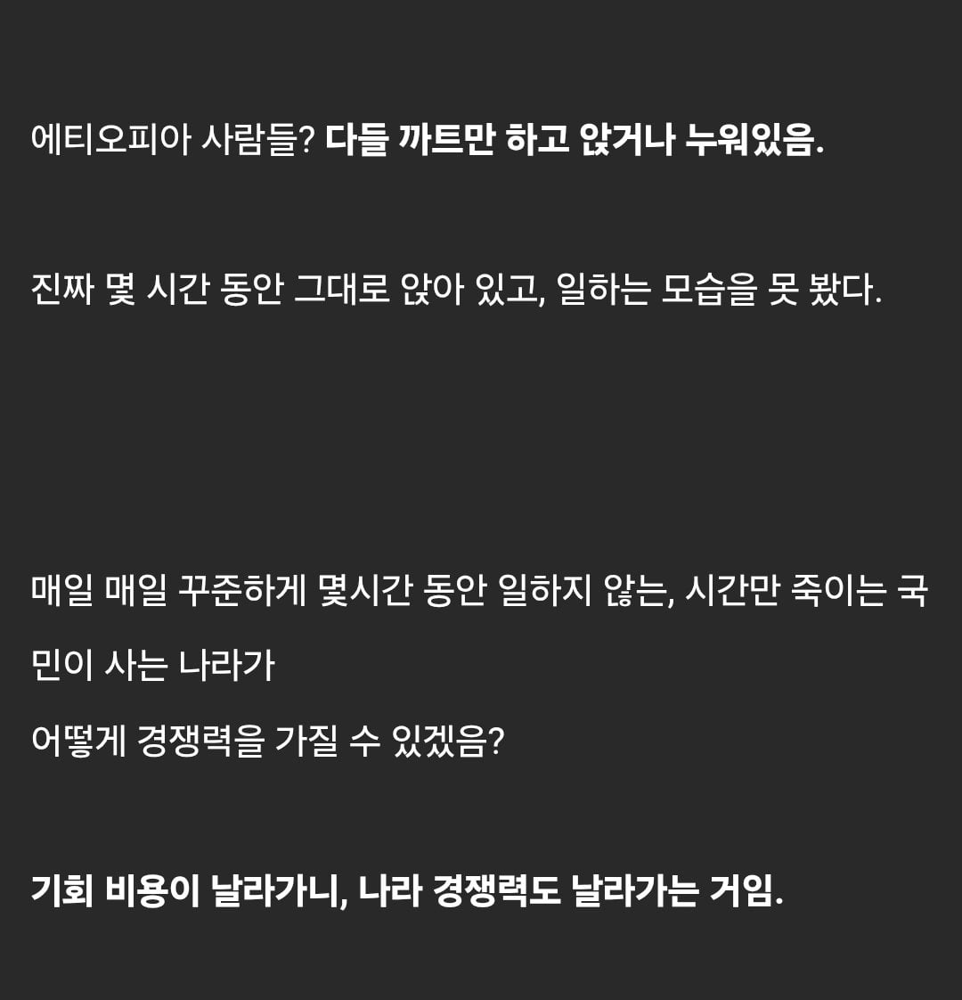
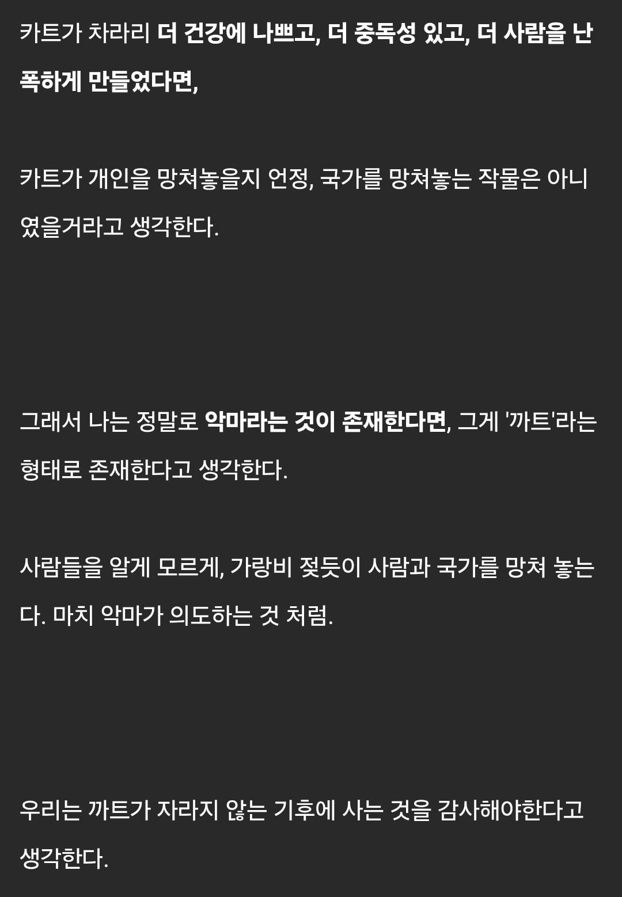

에티오피아에서 살다온 사람이 쓴 글









에티오피아에서 살다온 사람이 쓴 글









지금도 개드립하면서 숏폼보는중 배가 안고픔
까트 발암물질도 있다고 본거같은데
빈낭
그건 빈랑 아닌가? 저건 발암물질 목록 에는 없다는데
아 다른거였구나 내가 착각했네
"죽은 시간을 사는 사람들" 이라는 말이 너무 무서운데
이게 문화니 뭐니 하면서 없앨수가 없다던데
이미 중독자가 너무 많아서
저거 금지시키면 담배/술 금지는 비교도 안될 혼란에 빠짐
삔랑같은건가
나태의 악마
거래처에 애가 맨날 씹는게 저건가 냄새 약간 박하비슷한데
띠용?
미얀마애가 맨날 뭐 씹던데 중독성있다고 그러더라고
빈랑? 아닐까 까트면 효과가 하루를 못간다하니
동남아 사람이면 빈랑임
빈랑은 씹으면 이빨이 빨개 지던데
어 그거다 그거 입맨날빨감
저게 그건가
빠니보틀 영상에서 봤던거
막 이파리 씹다가 퉷 퉷 하고 뱉던데
신기하네....
두세시간을 씹어야 효과있는데 저거를 어케 발견한거디
저것도 금단증상이 있는건가? 적힌거만 보면 국가에서 막아야만 할 거 같은데..
약물적 금단증상보단... 현실을 직시해야하는게 금단증상에 가깝다고 생각함
배고프고 나아질 기미는 안보이는데 날은 덥고 해야할 일은 고되니
적어도 스스로를 마취시키지 않으면 너무나도 ㅈ같은 현실에 짓눌리니까
까트의 금단 증상은 우울, 불안, 동기 저하와 무기력, 집중력 감소, 피로감, 떨림, 두통, 불면증 등이다 래
효과가 술, 커피, 담배 합친거랑 비슷하고 유해성이 대마보다 낮다는데

나태의 악마의 풍만한 가슴
느린 대마인가
2016년 제주도에 예맨 난민 560명 왔을 때, 가방검사에서 까트 나온 새끼들은 입국 못하고 다 튕겨났지 ㅋ
젠지 까트 ㅋㅋㅋ
2015년쯤에 3톤인가? 우리나라 거쳐서 환승시키려던 일당 잡힌 적 있는데, 찾아보니 그때도 에티오피아였네.
트위터에서 영상보면 뭔 볼따구가 다람쥐마냥 존나 커진 상태에서 계속 입에 쑤셔넣던데 존나 기괴하더라
우리나라는 까톡이 있지
까트 하면 모잠비크만 떠오르는데 에티오피아도 심각하구나
쇼츠에 올라오는거보면 가관임 ㅋㅋㅋㅋ
까뜨에다가 뭔 가루 집어넣고 기분 좋게 씹더라
감사합니다 윈터
??? : 그래서 숏폼이라는걸 만들었는데 말이죠